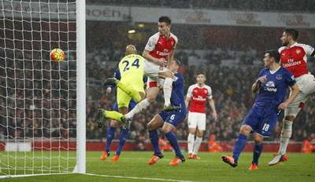

Arsenal kembali menunjukkan taringnya di kancah Liga Premier. Setelah beberapa musim absen dari persaingan papan atas, The Gunners kini tengah berjuang keras untuk merebut kembali posisi puncak klasemen. Performa konsisten dan semangat juang tinggi para pemain menjadi kunci keberhasilan mereka sejauh ini.
Dengan skuad yang solid dan taktik yang matang, Arsenal berhasil meraih kemenangan demi kemenangan. Kemenangan telak atas [nama tim lawan] pada pekan lalu semakin mengukuhkan posisi mereka di papan atas klasemen. Para penggemar Arsenal pun semakin optimis bahwa tim kesayangan mereka dapat kembali berjaya seperti masa-masa keemasan
Namun, jalan menuju puncak masih panjang dan penuh tantangan. Arsenal harus tetap fokus dan konsisten untuk bisa mempertahankan posisinya. Persaingan dengan tim-tim besar seperti [nama tim rival] akan menjadi ujian sesungguhnya bagi pasukan Mikel Arteta